Halo! I'm a UX designer currently residing in Scotland
My work is driven by empathy, collaboration and fresh ideas
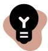That extra little thing your project needs? I can do that
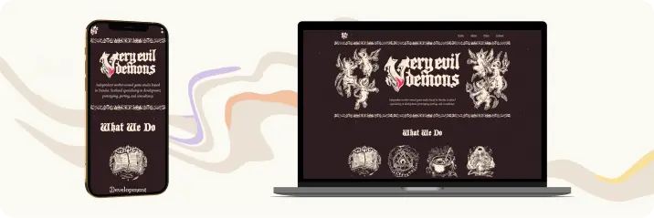
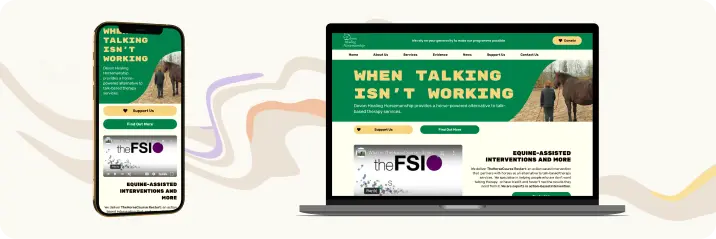
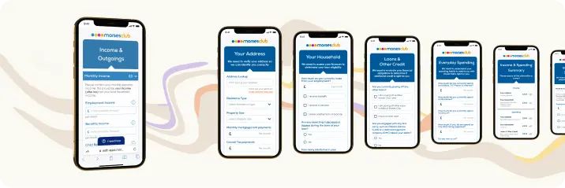
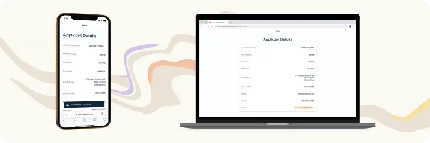
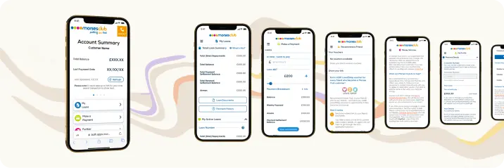
01
Site Design - Very Evil Demons
Very Evil Demons
Very Evil Demons
UX/UI
Web Design
User Research
New Product
02
Side Design - DHH
Devon Healing Horsemanship
Devon Healing Horsemanship
UX/UI
Web Design
User Research
Redesign
03
Income & Expenditure Rework
Morses Club
Morses Club
Interaction Design
UX/UI
User Research
Existing Product
04
Principle Application Manager
Shelby Finance Internal Product
Shelby Finance Internal Product
Interaction Design
UX/UI
User Research
Branding
New Product
05
Online Customer Portal
Morses Club
Morses Club
UX/UI
Branding
Existing Product
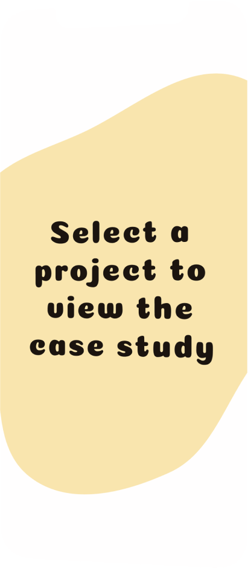
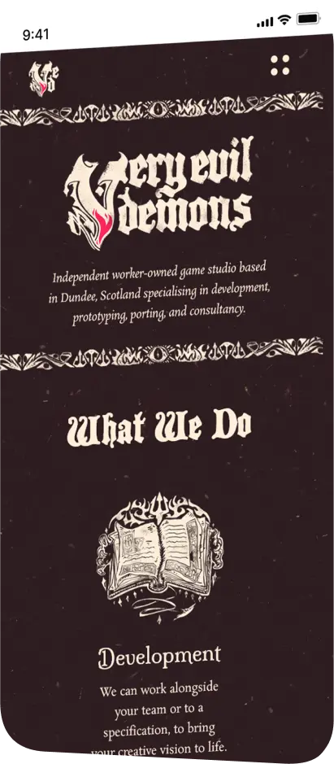
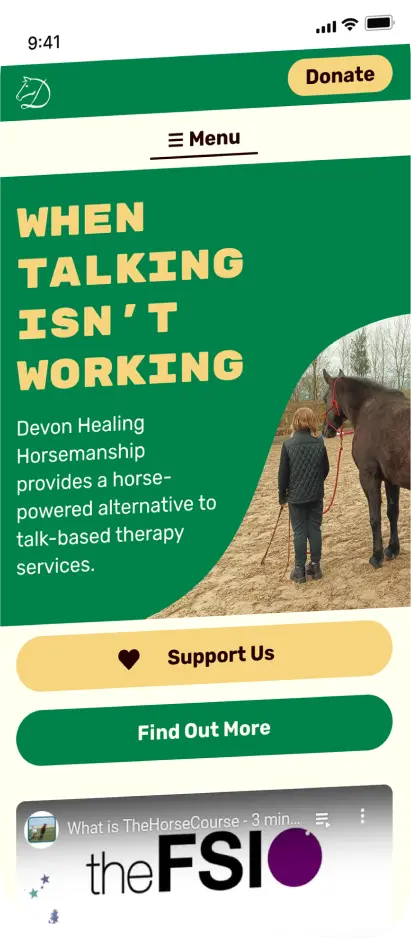

 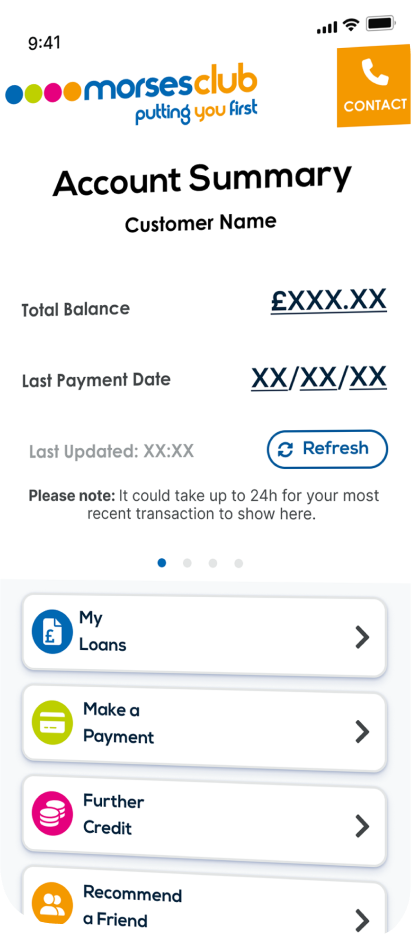
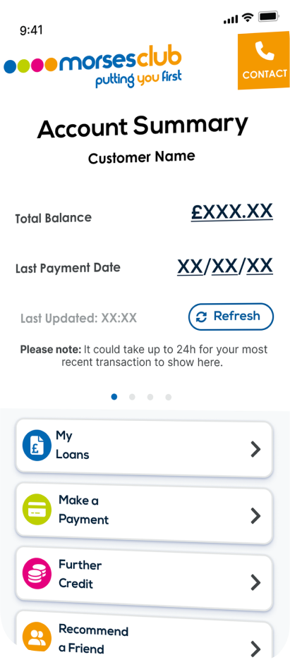
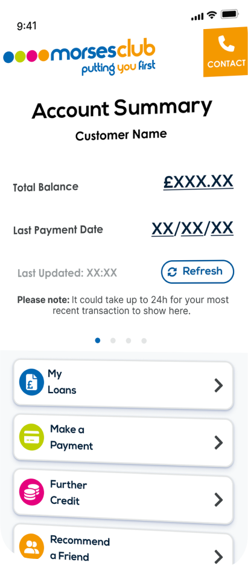
I'm available for work!
Get in touch ☻
UXbyDLH@gmail.com
Get in touch ☻